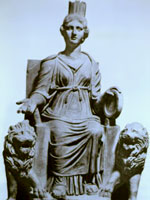

Кибела (латинський - Cybele), Цібели, іноді Кібеба - в античній міфології богиня фрігійського походження, близька за своїми функціями богині Реї і іноді ототожнюють з нею, є уособленням регулює, впорядковує стихійні природні сили початку. Одне з її імен - Велика мати богів. Вона - володарка гір, лісів і звірів, регулююча їх невичерпне родючість.
Кибела зазвичай зображується їде на золотій колісниці (символ землі), в оточенні диких левів іпантер, які символізують природну енергію, або сидить на троні, оточеному левами.
Зубчаста у вигляді вежі корона Кібели була її атрибутом як покровительки і берегині добробуту міст. Богиня Кібела вимагає від своїх служителів повного підпорядкування їй, забуття себе в шаленому захваті і екстазі, коли жерці Кібели наносять один одному криваві рани або коли неофіти оскоплялі себе в ім'я Кібели, йдучи зі світу буденного життя і віддаючи себе в руки похмурої богині.
Культ Кібели був оргиастическим за своїм характером, проте, одночасно він зв'язувався з аскетичним самообмеженням, що знайшли відображення в сюжеті про оскоплення Апіса; в цілому це підкреслює загальну символіку її образу. Культ Кібели в Римі був введений в 204 році до нашої ери в кінці Другої Пунічної війни, в період активної експансії Риму на схід. Згідно викладу «Сівілліних книг», древній символ культу богині - темнокольорові камінь (ймовірно, метеорит) був урочисто перевезений особливим посольством в Рим з її храму в Пессінунт. З тих пір культ богині, під ім'ям «великої матері» (Mater magna), став державним; їм завідувала особлива колегія жерців. Римлян в культі Кібели залучали спокутні жертви: тавроболія і кріоболіі (посвята в культ шляхом зрошення бичачої або баранячої кров'ю).
Картина Рубенса "Союз Землі і Води" зображує алегоричну сцену союзу Землі, яку уособлює Кибела, що тримає в руці ріг достатку, наповнений плодами, і Води - Нептуна, прекрасно впізнаваного по тризуба. Союз освячує крилата Вікторія, яка покладає золоту корону на голову богині.